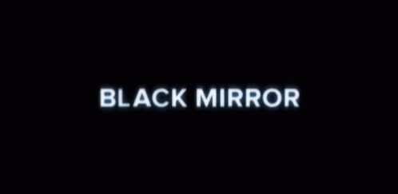
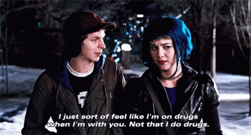

Black Mirror é uma série britânica de ficção científica e suspense criada por Charlie Brooker, lançada em 2011. A produção explora a relação entre os seres humanos e a tecnologia, apresentando histórias independentes que mostram possíveis consequências do avanço tecnológico na sociedade. Cada episódio apresenta personagens, cenários e situações diferentes, abordando temas como inteligência artificial, redes sociais, realidade virtual, vigilância e dependência tecnológica. A série chama a atenção por apresentar um futuro que, apesar de parecer distante ou fictício, muitas vezes se aproxima de situações que já fazem parte da nossa realidade. Um dos seus principais objetivos é provocar reflexões sobre como a tecnologia influencia nossas relações, comportamentos e decisões. Com histórias surpreendentes e críticas sociais, Black Mirror se tornou uma das produções mais conhecidas do gênero de ficção científica e suspense.

Scott Pilgrim Contra o Mundo é um filme de comédia, ação e romance lançado em 2010, dirigido por Edgar Wright e baseado nas histórias em quadrinhos criadas por Bryan Lee O'Malley. A história acompanha Scott Pilgrim, um jovem músico que toca baixo em uma banda chamada Sex Bob-Omb. Sua vida muda quando ele conhece Ramona Flowers e seapaixona por ela. Para conseguir ficar com Ramona, Scott precisa enfrentar seus sete ex-namorados malignos, participando de batalhas que misturam artes marciais, referências aos videogames e situações completamente inesperadas. O filme se destaca por sua estética inspirada nos jogos eletrônicos, com efeitos visuais que lembram quadrinhos, animações e jogos de luta. Além do humor e das cenas de ação, a produção aborda temas como relacionamentos, amadurecimento, inseguranças e autoconhecimento. Scott Pilgrim Contra o Mundo conquistou fãs por seu estilo visual único, trilha sonora marcante e referências à cultura geek e aos videogames.